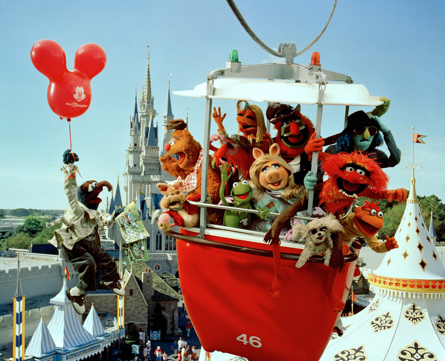

The Muppets (2011)
Luego de haber ofrecido una fuerte suma de dinero por los personajes de Jim Henson, conocidos como Los Muppets, se estrena The Muppets por TV, lamentablemente Henson, muere poco después del exitoso estreno y queda un conflicto latente por los derechos de los personajes.
"Durante sus vacaciones en Los Ángeles, Walter, el fan numero uno de los Muppets y sus amigos Gary (Jason Segel) y Mary (Amy Adams) de Smalltown, Estados Unidos, descubren que el petrolero Tex Richman (Chris Cooper) planea arrasar con el Teatro de los Muppets para perforar y extraer el petróleo hallado debajo del viejo solar de los Muppets. Para montar el mayor Teletón de los Muppets jamás visto y recaudar los US$ 10 millones necesarios para salvar el teatro, Walter, Mary y Gary ayudan a Kermit La Rana a reunir nuevamente a los Muppets, cuyas vidas ahora han tomado rumbos diferentes: Fozzie trabaja en un casino de Reno con una banda tributo llamada los Moopets; Miss Piggy es una editora de moda de talla grande de la revista Vogue Paris; Animal se encuentra en una clínica de Santa Bárbara para aprender a controlar su ira; y Gonzo es un magnate de la industria de la fontanería. Con actuaciones especiales únicas de numerosas celebridades."
